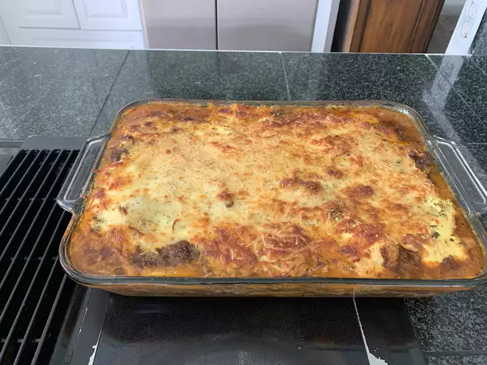

Zucchini Lasagna

Description
Keto lasagna made with zucchini slices instead of pasta.
This low-carb, gluten-free beef lasagna is delicious and satisfying; it's a crowd-pleaser!
Ingredients
- cooking spray
- 1 ½ large zucchinis, thinly sliced lengthwise
- 1 tablespoon olive oil
- 1 ½ cups low-carb marinara sauce
- 2 teaspoons salt, divided
- 1 teaspoon dried oregano
- ½ teaspoon ground black pepper
- 1 (8 ounce) container ricotta cheese
Steps